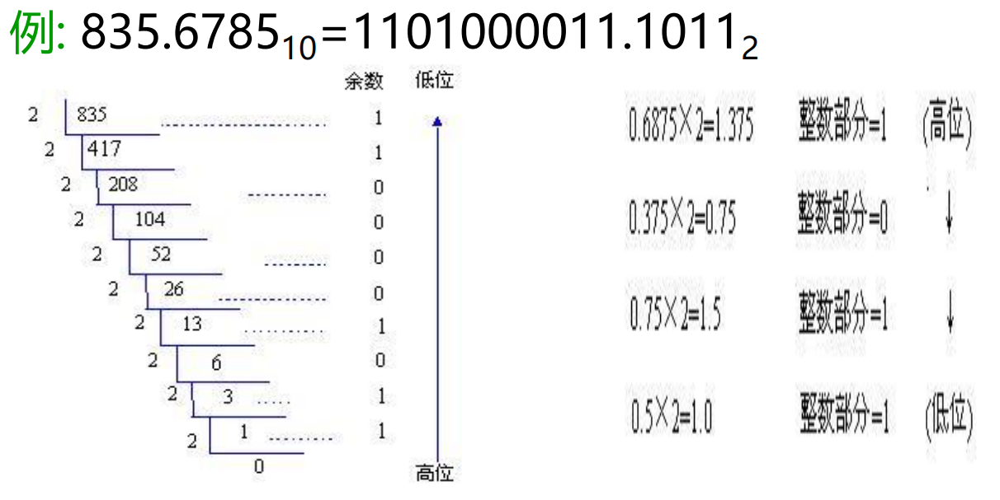
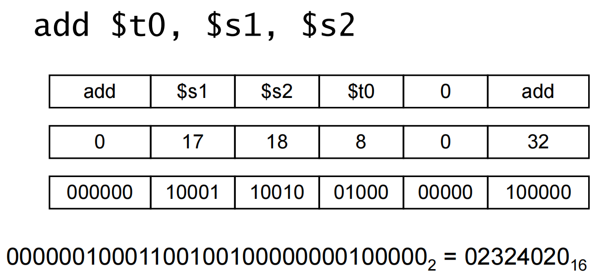

指令——计算机的语言
约 3041 个字 42 张图片 预计阅读时间 20 分钟
2.1 介绍
指令集
指令集是计算机全部指令的集合，不同电脑可能会使用不同的指令集，不同的指令集仍然会有相似的部分。
早期电脑使用简单指令集，许多现代电脑仍然使用简单指令集，但是也有使用复杂指令集。
精简指令集思想：使用简单指令集，复杂指令的功能使用简单指令进行实现，可以精简电路工艺。
MIPS 指令集
32个寄存器
指令
2.2 计算机硬件上的操作
举例
算数运算：add a, b, c # a gets b + c
 设计原则1：尽量简化设计，减小运算开销
设计原则1：尽量简化设计，减小运算开销
R-type Instruction
这一类的指令的操作数都是寄存器（包含算数运算和逻辑运算），并且所有 R 类型指令的操作码（ opcode ）都是 000000 ，不同功能的实现看功能码（ Function code ）
对于寄存器，目的寄存器（ Rd ）在后面，源寄存器（ Rs, Rt）在前面
2.3 计算机硬件上的操作数
寄存器操作数
在 MIPS 里面，一个32 bit 的数据称为一个 word
设计原则2：越小的程序运行越快，越小越快
内存中的数据
内存作用：内存用于存储数据（数组、结构以及动态数据等）
交互方式：通过 Load 操作将数据从内存中提取到寄存器中，通过 Store 操作将寄存器中的数据存储到内存中
内存的排列方式：基于字节编码（Memory is byte addressed），每个 address 存储了 8-bit
Word 存储在内存中：因而内存中的地址必须是4的倍数
数据的存储方式：MIPS采用 Big Endian（ 内存低位在寄存器的高位 ）
 在使用 Load 和 Store 指令的时候，需要注意将偏移位 × 4
在使用 Load 和 Store 指令的时候，需要注意将偏移位 × 4
指令类型
R-Type
- 两个操作数和结果都在寄存器的运算指令
R 类型指令的操作码全部为0
I-Type (存在立即数)
- 运算指令：一个寄存器、一个立即数
- load 和 store
- 条件分支
J-Type
- 无条件跳转
寄存器与内存的比较
- 寄存器访问比内存快（大致两个数量级）
- 基于内存数据的操作需要进行 load 和 store（需要更多的指令）
- 编译器应该尽可能多的使用寄存器（寄存器优化是必要的）
立即数
一般情况下数字存储在内存中，在使用时进行读取。但是也存在直接出现在指令中的数字，这些数字就是立即数。
例如：\(addi\quad s3,\quad s3,\quad 4\)
立即数可以是正数，也可以是负数。
设计原则3：要使得常见情况操作更快。（小数字的使用是常见的，立即数的使用可以减少 load 指令的使用，加快速度）
常数0
MIPS 中存在一个存储常数0的寄存器 $zero
2.4 有符号数和无符号数
无符号数
计算方式：\(x=x_{n-1}2^{n-1}+x_{n-2}2^{n-2}+...+x_{1}2^{1}+x_{0}2^{0}\)
范围：0 ~ \(2^n-1\)
对于32位数：0 ~ +4294967295
数字表示
十进制、二进制与十六进制
十进制：\(35_{10}=3\times 10^1+5\times 10^0\)
二进制：\(00100011_2=1\times 2^5+1\times 2^1+1\times 2^0\)
十六进制：\(0x23\quad or\quad 23_{16}=2\times 16^1+3\times 16^0\)
二进制与十六进制的互相转换：四位一转换
除了这些之外，还有八进制，二进制与八进制的转换为3位一组，十六进制与八进制的转换需要通过二进制
R进制数=>十进制数：按”权“展开
十进制数=>R进制数：整数部分和小数部分分别转换（整数：除基取余，上右下左）（小数：乘基取整，上左下右）

有符号数
二进制补码
32位的数字中，最高位（第32位）是符号位（0表示是正数，1表示是负数）
数 \(x\) 的相反数 \(-x\) 的二进制补码是 \(2^n-x\)
计算方式：\(x=-x_{n-1}2^{n-1}+x_{n-2}2^{n-2}+...+x_{1}2^{1}+x_{0}2^{0}\)
范围：\(-2^{n-1}\quad to\quad 2^{n-1}-1\)
结论：一个负数的补码等于对应正数补码的”各位取反，末位加1“
符号拓展
在 MIPS 指令集中，存在半个字的数据，这些数据在运算过程中需要进行符号拓展。
符号拓展就是对最高位的数字进行延伸。如果是正数，拓展位全部为0，如果是负数，拓展位全部为1。
其他表示方式
原码
采用符号和幅值的方式进行表示，也就是最高位为符号位，后面的为绝对值。（存在+0和-0）
 现在计算机内部整数采用补码进行表示，但是浮点数的尾数用源码定点小数表示
现在计算机内部整数采用补码进行表示，但是浮点数的尾数用源码定点小数表示
反码
一个数的相反数就是将这个数的每一位按位取反。（与补码相差1）
移码
通过将数加一个偏移量使其具有非负的表示形式。最小的负数用 \(00...000_2\) 表示，最大的正数用 \(11...111_2\) 表示，0一般用 \(10...000_2\) 表示。
将每一个数值加上一个偏置常数（bias），一般来说，当编码位数为n时，取 \(2^{n-1}\)
用移码来表示指数（阶码）时，便于浮点数加减运算时的对阶操作（比较大小）
2.5 计算机中的表示指令
指令
计算机中的指令都是二进制数，称为机器码。MIPS指令时32位的指令。
MIPS指令
R型指令
格式
- op: operation code (opcode)
- rs: first source register number
- rt: second source register number
- rd: destination register number
- shamt: shift amount
- funct: function code (extends opcode)
举例

add 指令的操作码是0，功能码是32
I型指令
格式
- rt: destination or source register number
- Constant: \(-2^{15}\quad to\quad +2^{15}-1\)
- Address: offset added to base address in rs
设计原则4：好的设计需要一定的妥协
举例
load word 指令的操作码是35
I型指令包括部分跳转指令（branch instructions）以及与内存进行交互的指令（load and store instructions）
指令编码
部分常见的指令编码
具体举例
存储在计算机中的程序
- 指令也是二进制表示的，和数据的表示方式一致
- 指令和数据都存储在内存中
2.6 逻辑操作
不同语言中的逻辑操作
Shift 操作
格式：
- shamt：需要移动多少位
左移，低位用0补全，移位表示乘。右移，高位用0补全（无符号数），移位表示除。
立即数的拓展
- 在与立即数进行逻辑操作时，立即数的高16位补0后形成32位常数进行计算
- 与立即数进行加法运算时，将立即数进行符号拓展
2.7 跳转指令
分类
- 有条件跳转
BEQ, BNE, SLT……
- 无条件跳转
J, JR, JAL
指令格式
跳转都是相对跳转，而且是相对当前指令的下一条进行跳转。（运行过程中在取指令的过程中 PC 就会自增）
而且在跳转过程中的偏移会左移两位，也就是低位补两个0，因为计算机中指令位置的最后两位一定是两个0（32位的指令需要占用4份空间进行存储），所以在机器码中就不写最后两位的0来增大可以跳转的范围。
jump 指令仅仅只是跳转到目的位置，jump and link 除了跳转过去之外，还存储了当前指令的下一条指令的位置，便于后续跳回来。
举例
Jump 指令
跳转到的位置取当前指令的下一条的高四位以及 label 作为低位的位置。
J 类型指令
J 类型指令只包括 j 和 jal 两条指令。这些指令的跳转同样需要内存的地址，并且跳转的范围不是无限的。当需要跳转的位置过于远时，就需要用到 jump register
SLT
格式：

机器码：

使用 SLT 指令实现不同的跳转条件
伪指令
MIPS 内部本身没有的指令，但是可以通过指令的组合实现。
举例
伪指令汇编器会提供，但是在计算性能的时候需要替换成实际需要的指令进行计算
基本块
一系列不涉及跳转的连续指令，也就是顺序执行下来的指令。
基本块因为不涉及指令的跳转，所以有较快的执行速度，并且 CPU 会进行优化，可以做到多条指令同时进行，并且可以实现乱序执行。
比较指令
为什么涉及比较的指令只有 blt 和 bge？
- 一个指令集中的指令不能过多
- 对于硬件来说，大于小于比较会比等于比较慢很多，如果增加了大于小于比较指令，就需要增加单条指令的执行时间，会影响到程序的整体性能
所以在MIPS中，大于小于比较是通过其他指令的结合实现的
边界检查
-
将有符号数作为无符号数来处理，是检验 \(0\leq x<y\) 的一种低开销方法，常用于检查数组下标是否越界
-
使用无符号比较 \(x<y\) ，在检查x是否小于y的同时，也检查了x是不是一个负数
举例
2.8 过程调用
步骤
- 将参数放到寄存器中
- 将控制器转到程序中
- 获取子程序运行空间
- 执行子程序操作
- 获取返回值并且存储到寄存器中
- 返回调用子程序的地方
相关指令
调用子程序的指令为 jal（ jump and link ），会更改 pc 的指向（跳转到目标地址），并且存储返回地址（ $ra ）。
在调用子程序时，可能目前的程序也是一个子程序，所以在调用子程序之前需要对 $ra 进行保存以保证程序执行后依然能够返回到正确的位置。
寄存器使用
寄存器使用过程中的一些约定
子程序可以直接使用t系列寄存器，但是如果要使用s系列寄存器，需要首先对寄存器中的值进行保存，并且在返回主程序的时候恢复寄存器中的值。
栈
子程序在栈中的结构
栈中存储的内容包括参数寄存器，返回地址，s寄存器以及传入的参数等
地址空间的划分
多级子程序的调用
每一个活跃的子程序都会在栈中有自己的空间，执行完后就会释放。程序的栈指针指向栈顶（最小地址），帧指针指向栈底（最大地址），栈指针在程序执行过程中会发生变化，但是帧指针始终保持不变。
叶程序与非叶程序
叶程序是指不会再调用别的程序的程序，非叶程序在执行过程中还会再调用别的程序。因而非叶程序需要保存 $ra 以及参数寄存器中的值。
调用过程中的数据保存
调用者需要保存的内容（调用前）
- $a0-a3 旧的参数
- $ra 返回地址
- $t0-t9 临时变量寄存器（如果后续需要用到其中的数据的话）
被调用者需要保存的内容（调用中）
- $s0-s7 需要保存的寄存器中的数据，需要假设为仍然有用
2.9 交互
字符数据
基于Byte的字符集
- ASCII：128个字符
- Latin-1：256个字符
Unicode
-
UTF-16，UTF-32：长度比较长（2个字节、4个字节）
-
UTF-8：不定长编码（英文1个字节，中文3个字节等）
基于一个字、半个字的操作
- MIPS中的字、半个字的存储
MIPS中的数据传输是32位的，也就是说，数据总是基于32位进行传输的，如果传输的仅仅只是8或者16bit的数据，会造成一定的浪费。
2.10 MIPS中对于32位立即数地址的跳转
32位常数
因为指令内部最多存储16位的立即数，因而对32位常数的处理需要额外的操作方式进行处理。
一种方式为将32位的常数拆分为高16位与低16位分别进行处理。
同时，在跳转指令中，跳转的偏移量也是有限的，因而在需要跳转到比较远距离的时候需要使用 j 指令，如果还是不够远的话，需要先将需要跳转的地址存储在寄存器中，然后使用 jr 指令进行跳转。
Branch跳转地址

跳转的目标地址 \(\(Target\quad address= PC + offset\times 4\)\)，并且在这个时候 PC 以及完成了 +4 操作
Jump跳转地址
跳转的目标地址 \(\(Target\quad address=PC_{31...28}:(address\times 4)\)\)
寻址模式总结
2.11 并性性和指令：同步
同步
两个进程共享一块内存区域
- P1写数据，P2读数据
- 当P1和P2不是同步的时候容易产生数据冲突
硬件上的支持（加锁）
- 原子性的对内存的读写
- 不允许同时对一块内存空间进行读和写的操作
实现方式
- 单个指令（难以实现，复杂，不推荐）
- 使用指令对（更加规整，推荐）
指令实现
- Load linked: ll rt, offset(rs)
- Store conditional: sc rt, offset(rs)
两条指令之间不能够有其他程序操作这个数（这对指令是零件驱动的，需要尽可能少的在这两条指令之间加别的指令），成功的话 rt = 1，否则 rt = 0
可以额外使用一个寄存器来表示是否对一个数据进行了加锁
2.12 编译和程序启动
编译过程
高级语言 -> 汇编语言 -> 目标代码（不是机器语言）和链接器 -> 可执行程序
目标码可以减少在编译过程中重复文件的编译过程，只会编译修改过的文件，减少编译时间
汇编器伪指令
汇编器中本来不存在的指令，但是为了简化汇编语言而出现的一些“汇编指令”，这些“新的指令”由原来的指令组合形成。这些指令可能会使用到一些临时的寄存器，这个寄存器是 $at ，专门提供给这些汇编器伪指令使用，程序员在写程序的过程中不能使用这个寄存器。
静态链接和动态链接
静态链接为编译时链接，动态链接为运行时链接，只有当需要使用的时候才会去链接库文件，动态链接在初次链接中耗时较长。
动态链接相较于静态链接的优点：①在编译之后可以更改链接的文件，比如文件更新之后可以直接链接到新的库文件运行程序，而静态链接此时需要重新编译。②动态链接只有在使用时才会链接，生成的可执行文件一般小于静态链接生成的可执行文件。
2.13 x86指令的一些局限性
复杂指令集计算机CISC
指令系统越来越大，难以保证涉及的正确性、难以调试和维护，并且因指令操作复杂而增加机器周期，从而导致了系统性能的下降。
而且，在程序中各种指令出现的频率悬殊很大，最长使用的是一些简单指令，这些指令占程序的80%，但只占指令系统的20%。而且在为操作控制的计算机中，占指令总数20%复杂指令占用了控制存储容量的80%。
精简指令系统计算机RISC
指令的总数较少，一些复杂的操作使用指令集中不同指令的组合实现。
RISC涉及风格的主要特点：
- 简化的指令系统（指令少/寻址方式少/指令格式少/指令长度一致）
- 以RR方式工作（除Load/Store指令可访问存储器外，其余指令都只访问寄存器）
- 指令周期短（以流水线方式工作， 因而除Load/Store指令外，其他简单指令都只需一个或一个不到的时钟周期就可完成）
- 采用大量通用寄存器，以减少访存次数
- 采用组合逻辑电路控制，不用或少用微程序控制
- 采用优化的编译系统，力求有效地支持高级语言程序